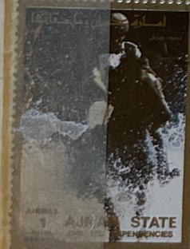
| SOURCE | TITLE| IMAGE MATCH | click to source page |
| www.ebay.com | EAT MAGAZINE - JAPAN CATTLE PRESS - SOULFY - MIGHTY FROG ... | 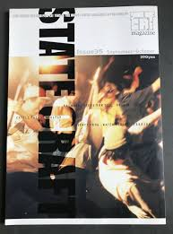 |
| open.spotify.com | Cloud (Feat. Clavita, Donutman) - song and lyrics by ... | 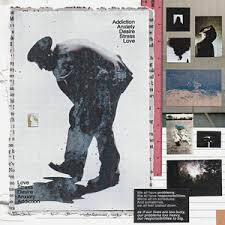 |
| gallery98.org | Gallery 98 | Shigeko Kubota, Video is Vacation of Art, Flyer ... | 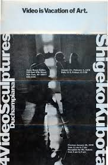 |
| www.youtube.com | Painful Baggage (Feat. Sonny Zero, BAYLEE, Minshik, SWRY ... | 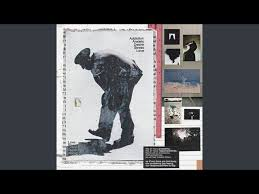 |
| www.ebay.com | Life Magazine 1968: Russia Takes Czechoslovakia, Mobsters ... | |
| www.instagram.com | Oil, fabric, and insecticide solution. These were the ... | 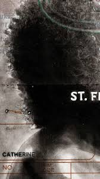 |
| physicstoday.aip.org | Physics Today | 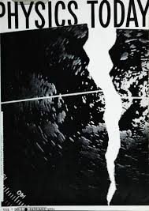 |
| www.reddit.com | Postcards from Everywhere. Greenland is Distant 🇬🇱📩 : r ... | 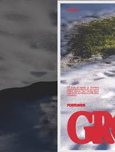 |
| modernism101.com | Modernism101.com | Moriyama, Daido: MEMORIES OF A DOG ... | |
| www.abebooks.com | LIFE MAGAZINE, AUGUST 30, 1968 (CZECHLOSLOVAKIA - DEATH OF ... | |
| www.jeannoelherlin.com | (Stephen Varble / Geoffrey Hendricks). La Mama E.T.C. ... | 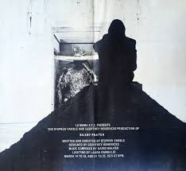 |
| www.amazon.com | a list of things that remind me of you: (´｡• ᵕ ... | 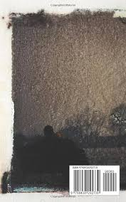 |
| www.wolfgangs.com | The Saturday Evening Post | April 20, 1968 at Wolfgang's | 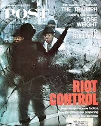 |
| www.ebay.com | 1970 Press Photo Johnny Miller, golfer - lra67436 | eBay | 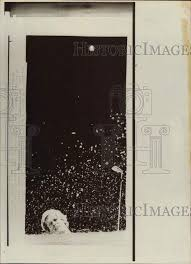 |
| newmuseum.linkedbyair.net | Programs - New Museum Digital Archive | 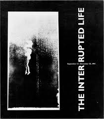 |
| www.abebooks.com | The Modern State - Christopher Pierson: 9780415074520 - AbeBooks | 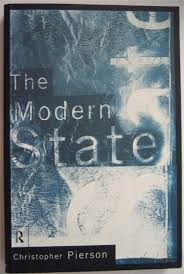 |
| www.alamy.com | Elizabeth freeman Black and White Stock Photos & Images - Alamy | 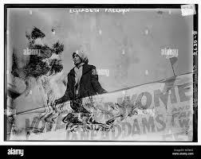 |
| www.mutualart.com | Anselm Kiefer | EMANATION (2011) | MutualArt | 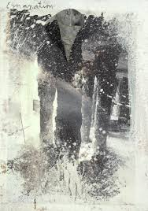 |
| www.thenostalgiashop.co.uk | John Surman - Morning Glory. Vintage Advert 1973 (ref ... | 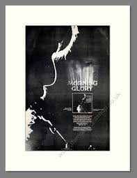 |
| www.amazon.com | CAFFEINE DREAMS AND COFFEE STAINED NIGHTMARES: McCauley ... | 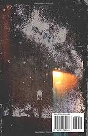 |
| www.orient-institut.org | Catastrophe, Memory & Critique | 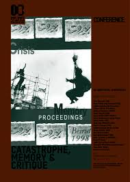 |
| www.etsy.com | Altered States (1980) Movie Poster High Quality Print Photo ... | |
| www.flickr.com | GALA KUNSTOMERSERVICE ISSUE (Kunstomerservice Editions) | Flickr | 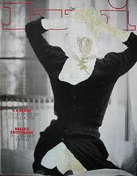 |
| www.rolandparis.com | Dilemmas of Statebuilding: Confronting the Contradictions of ... | |
| www.ebay.com | Life Magazine August 30, 1968 - Czech freedom fighters LOT ... | 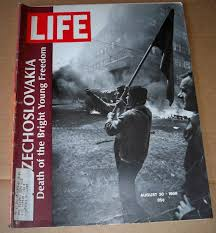 |
| exhibits.stanford.edu | Froshbook | Stanford Publications - Spotlight Exhibits | 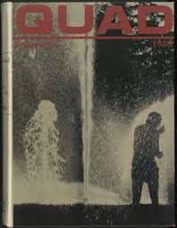 |
| www.etsy.com | To Live and Die in La-original Vintage Movie Poster of William ... | 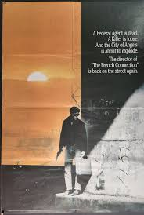 |
| cinematheque.cia.edu | WTO/99 – Cleveland Cinematheque | |
| upload.wikimedia.org | State 1986-10: Iss 293 | 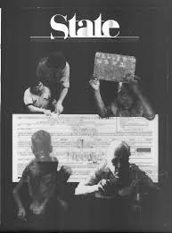 |
| rateyourmusic.com | Into the Grave by Suicide Commando (Album, EBM): Reviews ... | 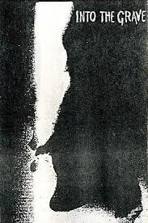 |
| kolajmagazine.com | Luc Fierens | Kolaj Magazine Artist Directory | 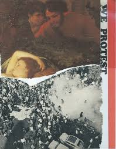 |
| www.georgeatthemovies.com | Altered States (1980) | 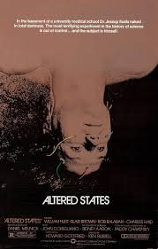 |
| direct.mit.edu | Small Fires Burning: Bruce Nauman and the Activation of ... | 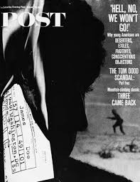 |
| www.amazon.com | Life Magazine, September 6, 1937: Life Magazine: Amazon.com ... | 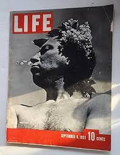 |
| www.originallifemagazines.com | LIFE Magazine Year in Pictures 1976 | Original LIFE ... | 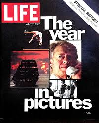 |
| www.instagram.com | To mark the NYC show we're going to offer a limited edition ... | 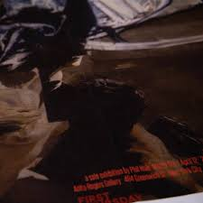 |
| repository.library.noaa.gov | College Program | 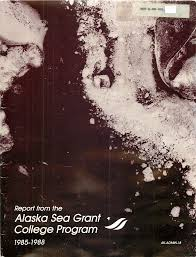 |
| www.facebook.com | Altered States (1980) explores consciousness | 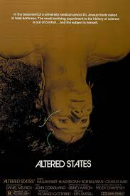 |
| tvmoviecards.com | 1979 Clint Eastwood - Escape from Alcatraz One Sheet Movie ... | 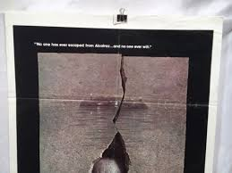 |
| preserve.lehigh.edu | Lehigh University Spring '78 Exhibitions and Collection ... | 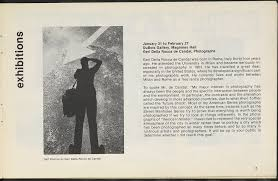 |
| www.facebook.com | Pioneer Square Theater | Facebook | 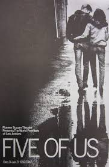 |
| listofdeaths.fandom.com | Altered States | List of Deaths Wiki | Fandom | 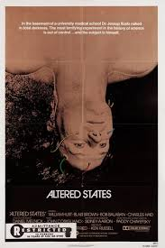 |
| www.redbubble.com | Essential T-Shirt for Sale mit "Cover des Last Exit-Albums ... | 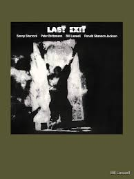 |
| archive.org | Time Magazine - (2001/12/24) - Closing In : Lost Library of ... | 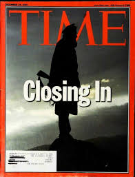 |
| table9mutant.wordpress.com | Altered States (1980) Blind Spot Review | Cinema Parrot Disco | |
| content.time.com | TIME Magazine -- U.S. Edition -- January 12, 2009 Vol. 173 No. 1 | 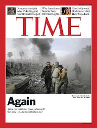 |
| www.wwhsalumni.com | Woodrow Wilson High School Alumni "Class of 1979 ... | 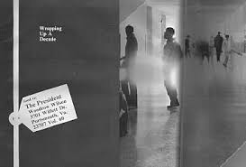 |
| meansof.org | Scanned using Book ScanCenter Flexi | 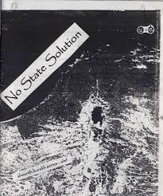 |
| www.cincinnatiarts.org | Raveling & Unraveling the Social Fabric : Works on Paper and ... | 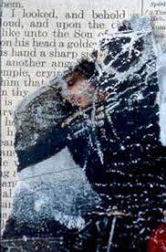 |
| www.ebay.com | Lawson Rollins - Full Circle CD CD10 894437002122| eBay | 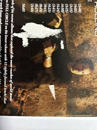 |
| content.time.com | TIME Magazine Cover: Aleksei Leonov - Mar. 26, 1965 ... | 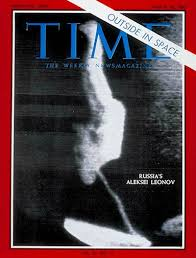 |
| www.kunstmuseum-stuttgart.de | Frischzelle_27: Claudia Magdalena Merk | Kunstmuseum Stuttgart | 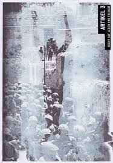 |
| segmentedturner.patternbyetsy.com | Vintage Detroit News Newspaper Edition – First Color Moon ... | 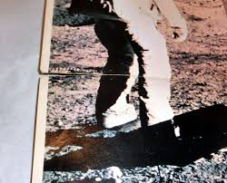 |
| en.wikipedia.org | Last Exit (Last Exit album) - Wikipedia | 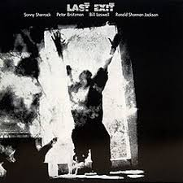 |
| www.techeblog.com | These Were the Final Shots from Photographer Robert ... | 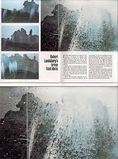 |
| 991.com | Dido No Angel / Outrospective USA Promo Display/Pos Material ... | 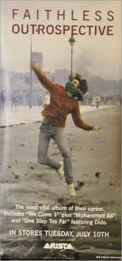 |
| www.imdb.com | The Passing (Video 1991) - IMDb | |
| x.com | Tumbbad 600 pages Storyboard binder #Filmmaking #Animtip ... | |
| cinemawasteland.com | Altered States (1980) Promo | |
| www.artphotolimited.com | US President John F Kennedy - The Iconic LIFE Cover from ... |